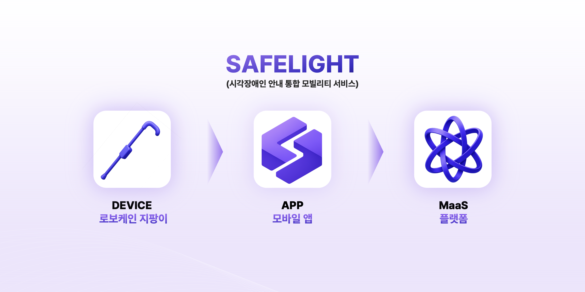
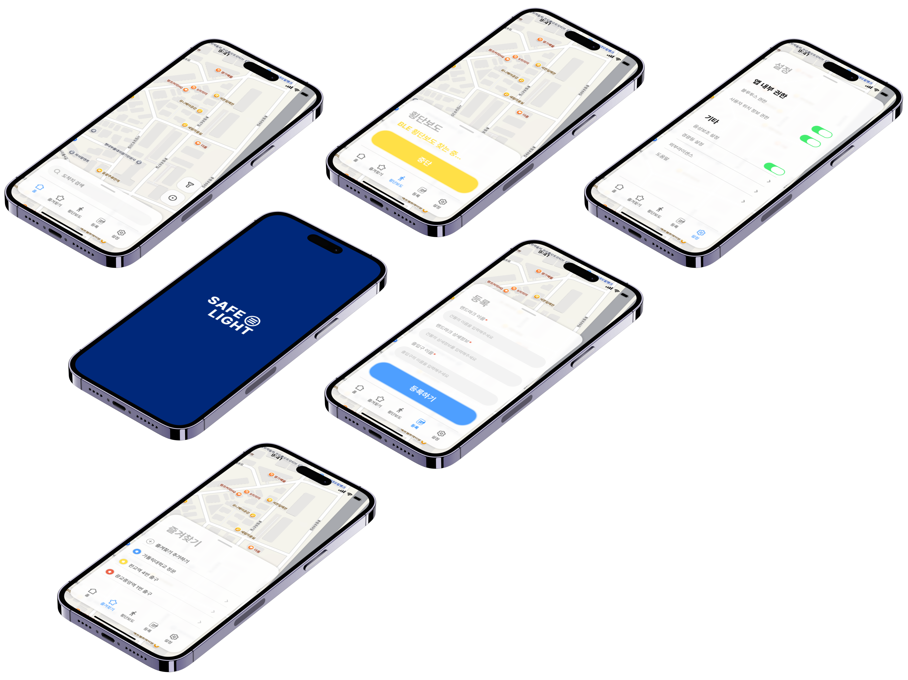
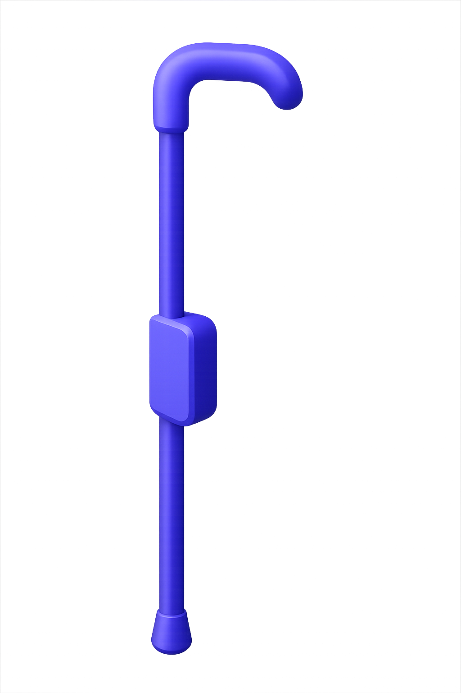
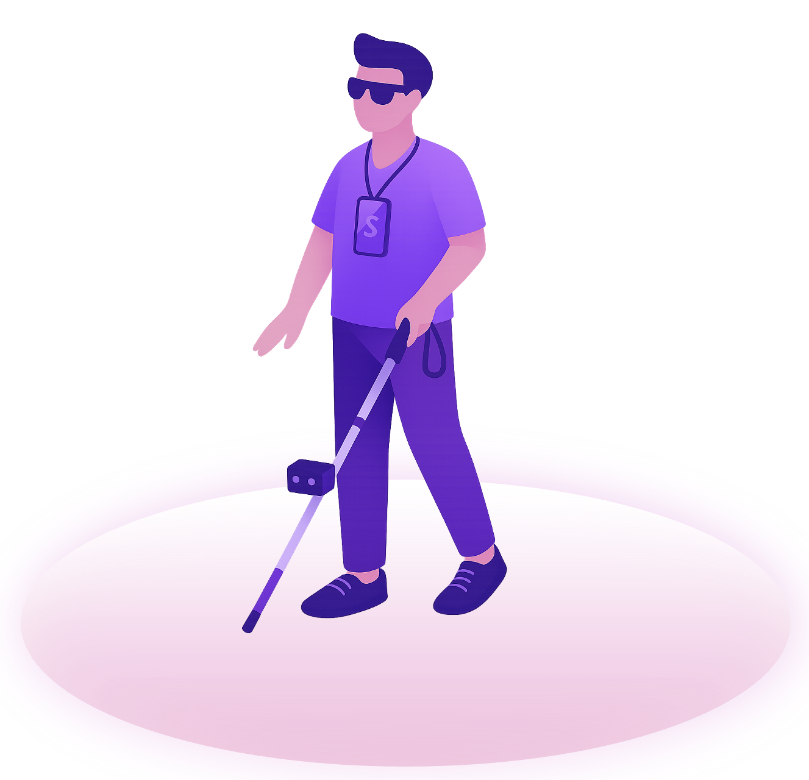

Wireless Communication Lab (WCL)
가톨릭대학교 정보통신전자공학부 무선통신연구실
WCL은 고효율 무선통신 기술, IoT 센서 네트워크, AI 신호처리를 핵심 연구 분야로 하며,
특히 GPS 음영지역에서의 위치 추정 및 내비게이션 핵심 기술을 연구합니다.
IMU 기반 보행자 추측 항법(PDR), 가상마커(VM) 결합 위치 추정, BLE IoT 통신,
강화학습(DRL) 경로 최적화, YOLO 기반 실시간 객체 탐지 및 환경 인식 등의
연구 성과를 실제 동작하는 디바이스·앱·클라우드 플랫폼으로 실증하고 있습니다.
We focus on high-efficiency wireless communication, IoT sensor networks, and AI-based signal processing.
Our current research centers on positioning and navigation technologies in GPS-denied environments.
We integrate IMU-based PDR, virtual marker localization, BLE IoT communication,
and deep reinforcement learning into operational device–app–cloud platforms.
통신 이론에서 서비스 플랫폼까지, 기술의 전 과정을 연구합니다
WCL은 고효율 무선통신 기술, IoT 센서 네트워크, AI 신호처리를 핵심 역량으로
연구 성과를 실제 동작하는 디바이스·앱·클라우드 플랫폼까지 구현합니다.
- IMU/GPS 센서 융합 — 다중 센서 데이터 기반 고정밀 위치 추정 기술
- BLE IoT 통신 시스템 — 저전력 무선 프로토콜 기반의 실시간 디바이스 통신
- AI 객체 탐지 · 경로 최적화 — YOLO 기반 실시간 환경 인식 및 DRL 경로 계획
- Edge Device + Mobile APP — 임베디드 하드웨어와 크로스플랫폼 앱을 연동하는 풀스택 개발
From communication theory to service platforms — we research the entire technology pipeline.
Our core competencies span high-efficiency wireless communication, IoT sensor networks, and AI signal processing,
delivering end-to-end implementations across devices, apps, and cloud platforms.
본 연구실에서는 학부연구생 및 대학원생(석·박사)을 모집하고 있습니다. 관심 있는 분은 연구생 모집 페이지를 참고해 주세요.
SafeLight — 실내외 보행 내비게이션 MaaS 플랫폼
SafeLight는 실외와 실내를 아우르는 시각장애인(BVI) 안심보행 통합 플랫폼입니다.
실외에서는 GPS 기반 경로 안내와 BLE 음향신호기 연동으로 횡단보도 보행을 지원하고,
GPS 신호가 차단되는 실내에서는 VM 기반 위치 추적과 YOLO 객체 탐지로 계단·에스컬레이터·엘리베이터·화장실 등을 안내합니다.

Software — SafeLight APP & MaaS Cloud
실내 지도 위에서 IMU 센서 기반 보행자 추측 항법(PDR)과 가상마커(VM)를 결합하여 GPS 없이도 사용자의 실내 위치를 연속 추적합니다.
건물 출입구 진입 시 QR 코드로 초기 위치를 설정하고, 계단·엘리베이터·화장실 등 실내 PoI에 부착된 QR로 위치를 보정합니다.
추적된 위치와 실내 지도 경로를 기반으로 TTS 음성 안내를 제공하며,
스마트 지팡이(Robo-Cane)로부터 BLE 실시간 통신으로 수신한 장애물 정보와 YOLO 탐지 결과를 반영하여 경로를 갱신합니다.
수집된 보행 데이터를 도시 교통망과 연계하는 MaaS 클라우드 플랫폼으로 확장하여 실외→실내 끊김 없는 이동 경험을 통합 제공합니다.
Flutter
IMU PDR
Virtual Marker
QR Positioning
TTS 음성안내
BLE
MaaS Cloud


Hardware — Robo-Cane (스마트 지팡이)
다중 초음파 센서, IMU, 카메라를 내장한 스마트 지팡이를 설계·제작합니다.
초음파 센서가 전방 장애물을 실시간 탐지하면 거리별 3단계 햅틱 진동으로 사용자에게 경고하며,
내장 카메라가 촬영한 이미지를 YOLO 추론하여 계단·엘리베이터·장애물 등을 탐지하고 사용자 위치를 갱신합니다.
지팡이에 내장된 모든 센서는 햅틱으로 제어되며, BLE 5.0 실시간 통신을 통해 탐지 결과를 앱으로 전송합니다.
앱은 이 데이터를 실내 지도와 결합하여 사용자에게 음성으로 안내합니다.
Ultrasonic Sensor
YOLO Detection
Camera Sensor
Haptic Control
BLE 5.0
IMU

NOW RECRUITING
WCL 학부연구생 모집
무선통신 · IoT · AI 기술 기반의 Physical AI 연구에 함께할 학부 연구생을 모집합니다.
모집 대상
대상
가톨릭대학교 AI전자정보융합대학 소속 학과 전공 1~3학년 학부생 (공학분야)
지원방법
이메일 지원 → 담당 교수 면담 → 팀 배정 → 연구 시작
모집 분야
SW — 모바일 앱 개발
Flutter 기반 크로스플랫폼 내비게이션 앱을 개발합니다.
IMU 센서 데이터를 실시간 처리하여 보행자 추측 항법(PDR)을 구현하고,
가상마커(VM)·QR 코드 기반 실내 위치 보정 알고리즘을 앱에 통합합니다.
TTS 음성 안내, BLE 디바이스 통신 모듈, 경로 이탈 재탐색 로직을 담당합니다.
Flutter / Dart
IMU 신호처리
BLE 통신
TTS
SW — 백엔드 · MaaS 클라우드
실내 지도 데이터 관리, 건물 출입구·PoI DB 구축,
보행 데이터 수집·분석 파이프라인을 설계합니다.
도시 교통망(버스, 지하철, 횡단보도 신호)과 연계하는
MaaS 클라우드 API 서버를 개발하고 Linux 환경에서 운용합니다.
NodeJS
Linux 서버
REST API
DB 설계
HW — 스마트 지팡이 (Robo-Cane)
다중 초음파 센서, IMU, 카메라 모듈을 탑재한 스마트 지팡이를 설계·제작합니다.
카메라 센서로 촬영한 이미지의 YOLO 추론을 통해 장애물을 탐지하고 위치를 갱신하며,
센서 데이터를 햅틱 진동으로 변환하는 임베디드 제어 로직을 개발합니다.
BLE 5.0 통신으로 앱과 실시간 데이터를 교환합니다.
아두이노 / 라즈베리파이 / ESP32
YOLO
초음파 센서
BLE 5.0
UI/UX — 접근성 인터페이스 설계
시각장애인 사용자 피드백을 반영한 접근성 중심의 UI/UX를 설계합니다.
VoiceOver·TalkBack 호환 인터페이스, 점자/대체 텍스트 지원,
음성 인식 기반 조작 흐름을 설계하고
사용성 테스트를 통해 반복적으로 개선합니다.
Figma
3D 모델링
접근성 설계
사용성 테스트
VoiceOver
연구 환경
📝
논문 공저 기회
연구 성과에 따라 학술 논문 공동 저자 참여
🛠
실무 프로젝트 참여
정부 R&D 과제 및 실제 서비스 개발에 직접 참여
🏆
공모전 · 학회 참가
각종 대회 출전 및 학술대회 발표 경험
지원 절차
01
이메일 지원
간단한 자기소개와 관심 분야를
이메일로 전송
02
교수 면담
최상호 교수님과
대면 면담 진행
03
팀 배정
관심 분야·역량에 따라
프로젝트 팀 배정
자주 묻는 질문
개발 경험이 없어도 지원할 수 있나요?
네, 가능합니다. 기본적인 프로그래밍 지식과 배우고자 하는 의지가 있다면 환영합니다. 입문 단계부터 멘토링을 제공합니다.
1학년도 지원 가능한가요?
네, 1학년부터 지원 가능합니다. 일찍 시작할수록 더 많은 경험을 쌓을 수 있습니다.
주당 몇 시간 참여해야 하나요?
학업과 병행할 수 있도록 유연하게 조정합니다. 프로젝트 상황에 따라 담당 교수님과 상의하여 결정합니다.